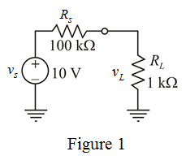
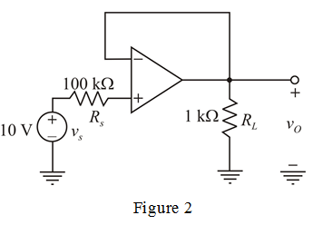

Apply voltage division rule and determine the load voltage.
Therefore, the load voltage,  is .
is .
(a)
Consider source is directly connected to the load.
Draw the circuit diagram.

Apply voltage division rule and determine the load voltage.
Therefore, the load voltage, is .
Determine the value of load current.
Therefore, the value of load current, is .
(b)
A unity-gain op-amp buffer is inserted between the source and the load.

From Figure 2, the amplifier is a buffer. The output voltage is equal to the input voltage.
Therefore, the load voltage, is .
Determine the load current.
Therefore, load current,  is .
is .
Current flowing through non-inverting amplifier is zero. Hence, current supplied by the source is zero.
Therefore, load current is supplied by the op-amp power supply.